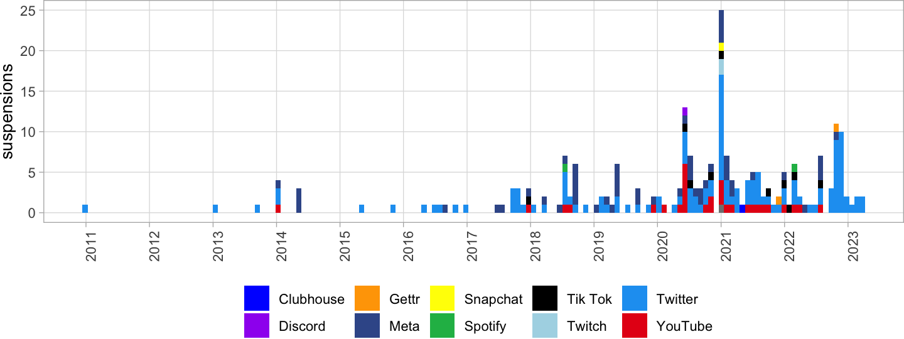
Tom Cunningham. (@testingham) First version Jan 31 2023, data last updated April 2023, text updated July 2024.1
1 Thanks to comments from Sahar Massachi, Katie Harbath, Nichole Sessego, David Harris, Theodora Skeadas, Eric Davis, Jimin Lee, and many others.
This note describes the suspension practices of the major social media platforms. I have collected a dataset of around 200 suspensions of prominent people across 12 platforms between 2011 and early 2023, stored in a google spreadsheet. The chart below summarizes the full dataset:
The data helps illuminate what platforms are doing. It is very difficult for an outside observer to see how a platform moderates their content. The advantages of studying the suspension of prominent users are that (1) the data is public and (2) the outcomes are comparable across platforms.
Key findings.
The rate of suspensions has grown over time. The increase seems to be primarily due to adoption of new policies rather than changes in user behaviour or changes in enforcement.
Suspension practices are fairly similar across the major platforms. Meta, Twitter, and YouTube all have broadly similar policies: they each suspend users for hate speech, election misinformation, COVID misinformation, and incitement.
The most common reasons for suspension were hate speech (15%) and COVID misinformation (12%). Platforms typically do not publicly state the reason why they suspend an account, however I was able to code the majority of cases either because the reason was clear from context, or the platform’s justification was relayed to the suspended user or a journalist. In 19% of cases I could find no reason given. For cases with a reason there were quite a wide variety: hate speech (15%), covid misinformation (12%), incitement (7%), and posting personal information (6%).
Twitter suspended more people than other platforms. From examining cases it seems this was primarily due to differences in the type of content posted rather than differences in policies or in enforcement.
US politicians were suspended at a much higher rate than non-US politicians. This was concentrated on Twitter and seems to be a mixture of US politicians being more active, being more likely to make policy-violating statements, and being under more scrutiny.
Among US Federal politicians suspended, 8 were Republicans, none were Democrats. The Republicans were suspended for a variety of different reasons and on a variety of platforms. The asymmetry does not seem to me to be primarily a difference in enforcement but a higher propensity for Republicans to say or do policy-violating things.
I am working on a separate essay about why platforms suspend users. It is difficult to give clear reasons why platforms suspend users. In a separate essay I try to break down how much their action can be attributed to influence from owners, from employees, from users, from advertisers, or from governments. Having this dataset of suspensions is very useful to be able to make generalizations about platform behavior.
Dataset
The figure below shows the entire dataset. Each line represents a suspension, with a given start and end date, colored according to the platform that implemented the suspension. I have highlighted the earliest suspension I observe: Courtney’s Love suspension from Twitter in 2011 for defamation. I have also highlighted all the suspensions of Donald Trump: in 2017 a rogue employee suspended him from Twitter, in January 2021 he was suspended from multiple platforms. Twitter and Meta both gave him temporary suspensions, then a number of platforms gave him indefinite suspensions. Twitter, Meta and YouTube all lifted their Trump suspensions in late 2022 or early 2023.
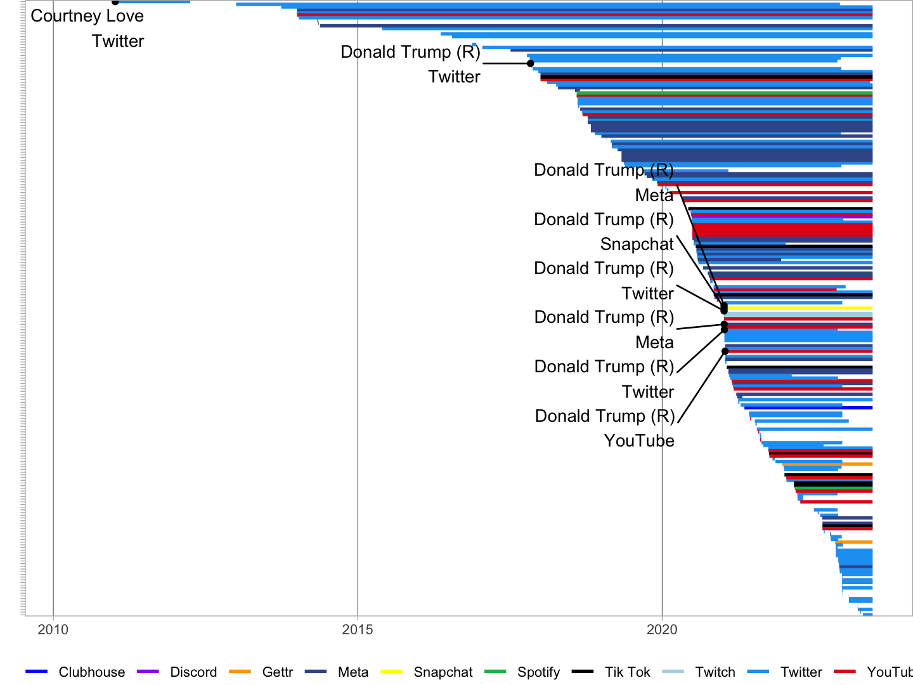
I am including only newsworthy suspensions. My basic criterion is to include any suspension which merits a mainstream news story. My process of collection has been collecting whatever caught my attention and supplementing that with data from Wikipedia, Ballotpedia, and Google searches (see Appendix for more discussion of sources). I believe that the data probably covers the majority of the newsworthy suspensions in the US since 2016, however for suspensions outside the US the fraction is surely lower. There is more detail on data sources in an Appendix. I have a list of other datasources for suspensions at the bottom of this document. Particular blind spots are (1) countries outside the US; (2) platforms like Twitch; (3) celebrities, especially adult performers who have high rates of being suspended, and who often have many followers.
I have a rough database of platform policy changes. In an Appendix I have a rough history of platform policy changes, and references to other similar databases online. One thing that I hope to work on as followup is a database of policies that would allow apples-to-apples compare what content is banned across platforms and across time. I also include in the Appendix a table showing general trends of famous people being excluded from mainstream media (film, television, music).
Aggregate Patterns
The rate of suspensions has substantially increased over time. The data show a substantial increase in suspensions, from an average of 1-2 per year before mid-2017, to an average of 10-20 per year since then. The observed increase is probably partly due to growth in overall activity on the platforms and partly due to my observations being biased towards more-recent suspensions, but I think the primary cause is an expansion of the rules which would justify a ban, discussed further below.
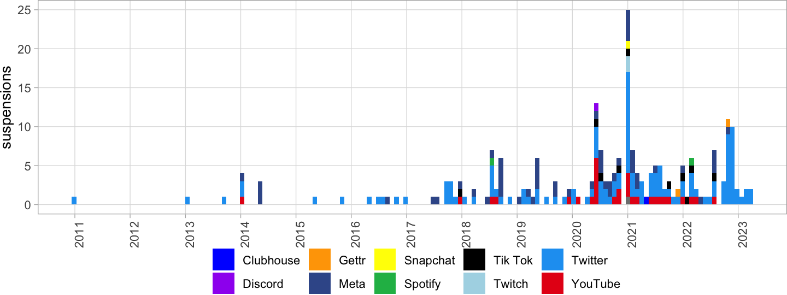
There are three prominent peaks in the history of suspensions:
- June 2020: a variety of American and British political personalities on the right were suspended for hate speech or similar reasons by Twitter and YouTube. On Twitter: Katie Hopkins, David Duke, American Renaissance (Jared Taylor). On YouTube: Stefan Molyneux, Gavin McInnes, American Renaissance (Jared Taylor), Richard Spencer, National Policy Institute.
- January 2021: many US politicians and political commentators were suspended after the capitol riot.
- November-December 2022: Twitter suspended many prominent figures for a variety of reasons under new policies introduced by Elon Musk.
The most suspensions are from Twitter, then Meta, then YouTube. We can see that Twitter suspension have been growing continuously since 2015, with a spike in 2021 due to the Capitol riot. Meta and YouTube also show an increase since 2017, but less-clear pattern of continuous growth.
In the Appendix I compare data from Twitter’s transparency reports which report total account suspensions on Twitter (i.e. suspensions of all accounts, not just prominent accounts) between 2018 and 2021. That data shows slower growth: suspensions for abuse grew by a factor of around 2, and suspensions for hateful conduct grew from 2018 to 2019 then decreased.
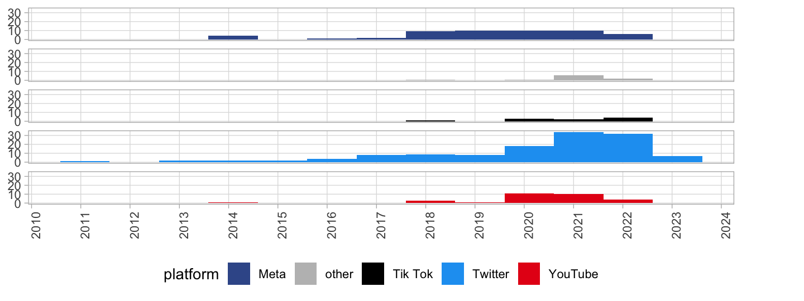
Suspension policies have become stricter. Several new policies have been added by platforms over the last 10 years which have tightened the limits on acceptable speech. Some examples (see Appendix for more details). Note that policies usually describe the type of content that will be removed, violations are only sometimes punished with an account suspension, and often platforms have a “strike” system for account suspension.
- Misgendering/deadnaming: Twitter (2018), TikTok (2022).
- Group superiority/inferiority: Meta (2019), YouTube (2019).
- Holocaust denial: YouTube (2019), Twitter (2020), Meta (2020), Reddit (2020).
- Harmful medical misinformation: Meta (2020), YouTube (2021).
- False allegations of election fraud: Meta (2021), YouTube (2021).
Broadly speaking it appears that the growth in suspension is attributable more to a change in policies than due to a change in behaviour or due to a change in application of policies. This is because it appears that a majority of suspensions over the last 5 years were taken under policies that did not exist prior to 2018.
Two important policies were introduced in response to external events: COVID misinformation and election deligitimization. Many accounts have been suspended under these new policies since 2020 but it is difficult to say whether this reflects a generally increased strictness of platforms.
Suspension policies have rarely been relaxed. There are two substantial instances of relaxation of moderation policy I’m aware of:
- A “newsworthiness” exemption for bans, i.e. effectively a relaxation of those bans. Newsworthiness exemption were officially introduced by Meta in 2016, Twitter in 2017, and Youtube in 2019.
- Twitter’s relaxation of policies under Elon Musk in late-2022. Twitter unsuspended many prominent accounts, however they also suspended many accounts for new reasons, and there has been little official communication of new policies.
Reasons for suspension. Platforms typically do not publicly state the reason why they suspend an account, however I was able to code the majority of cases either because the reason was clear from context, or was reported by the user, or because the reason was given by the platform to a journalist. In 19% of cases I could find no reason given. For cases with a reason there were quite a wide variety:
| reason | n | pct |
|---|---|---|
| no reason given | 43 | 19 |
| other | 39 | 17 |
| hate speech | 36 | 16 |
| covid misinfo | 26 | 11 |
| incitement | 16 | 7 |
| personal information | 13 | 6 |
| election misinfo | 12 | 5 |
| hate group | 10 | 4 |
| manipulation | 10 | 4 |
| terrorist group | 9 | 4 |
| court order | 6 | 3 |
| threat | 5 | 2 |
| accident | 4 | 2 |
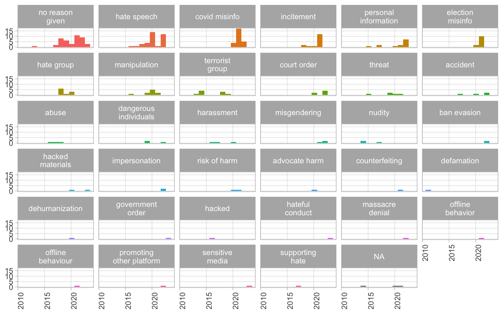
Suspension practices are fairly similar across the major platforms. We can see that Meta, Twitter, and YouTube all have broadly similar policies: they will suspend users for all of the following reasons:
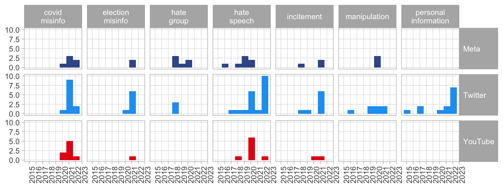
It is clear that Twitter has suspended more people than Meta and YouTube, but the majority of suspensions fall in categories which are also enforced by Meta and YouTube.2
2 One important exception is Dec 2022 spike in suspensions after Twitter adopted a new policy, suspending users for posting or alluding to already-public location information. This policy is notably stronger than Meta or YouTube.
By Type of Target
Politicians
Among US Federal politicians only Republicans have been suspended. In the US 8 Republicans have had one or more suspension, but no Democrats. Among the Republicans the suspensions were for a variety of reasons: related to the Jan 6 riots (Trump, Barry Moore, MTG), related to COVID (Ron Johnson, Rand Paul, MTG), for misgendering (Jim Banks), for tweeting a threat (Briscoe Cain), for animal blood on a profile photo (Steve Daines), one by a rogue employee (Trump).
It seems to me that the asymmetry in suspensions is primarily due to Republicans being more likely to violate the policies, rather than asymmetric enforcement of existing policies. I am not aware of any cases where a Democratic politician violated one of these policies but was not suspended.

Suspension of national politicians outside the US has been relatively rare. My dataset contains 13 national politicians who were suspended in the world outside the US, compared to 8 in the US. This is a big asymmetry, and something of a puzzle. I have discussed this with a number of people who worked in enforcement and they attribute to a mixture of (1) less policy-violating behaviour from non-US politicians; (2) looser enforcement against non-US politicians; (3) lower overall social media usage outside the US; and (4) lower coverage of non-US politicians in my dataset.

US Prominent Figures
This shows all suspensions of US “notable people”:
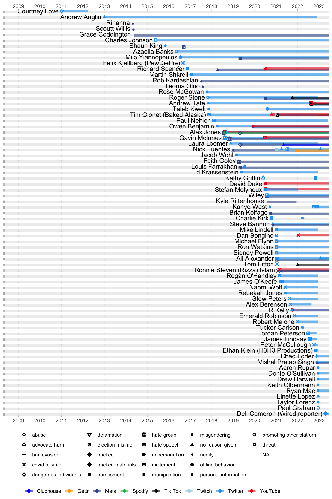
Between 2015 and 2017 there were a series of alt-right personalities suspended from Twitter. The suspensions were often not for their views but their behaviour:
- 2015: Charles Johnson from Twitter for a threat.
- 2016: Milo Yiannopoulos from Twitter for harassment, Richard Spencer from Twitter for manipulation.
- 2017: Roger Stone from Twitter for abuse.
- 2018: Alex Jones from Twitter for incitement and abuse.
Beginning in late 2017 more alt-right accounts were suspended. Either for hate speech, for offline behaviour, or without any public reason given:
- Late 2017: Baked Alaska from Twitter for hate speech.
- 2018: Owen Benjamin from Twit with no reason given, Alex Jones from FB and YouTube for hate speech.
- 2019: Nick Fuentes from Meta with no reason given.
Between November 2020 and January 2021 a large set of prominent figures were suspended for election-related reasons. The most suspensions were on Twitter but there were also from other platforms.
- Since November 2022 Twitter has unsuspended a large fraction of the suspended users that I track, probably around 1/2.
- Some people have been suspended simultaneously across multiple platforms (e.g. Alex Jones)
By Platform
Meta
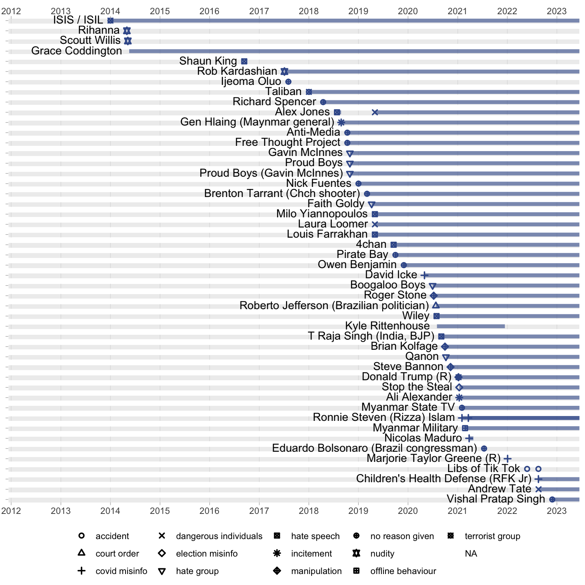
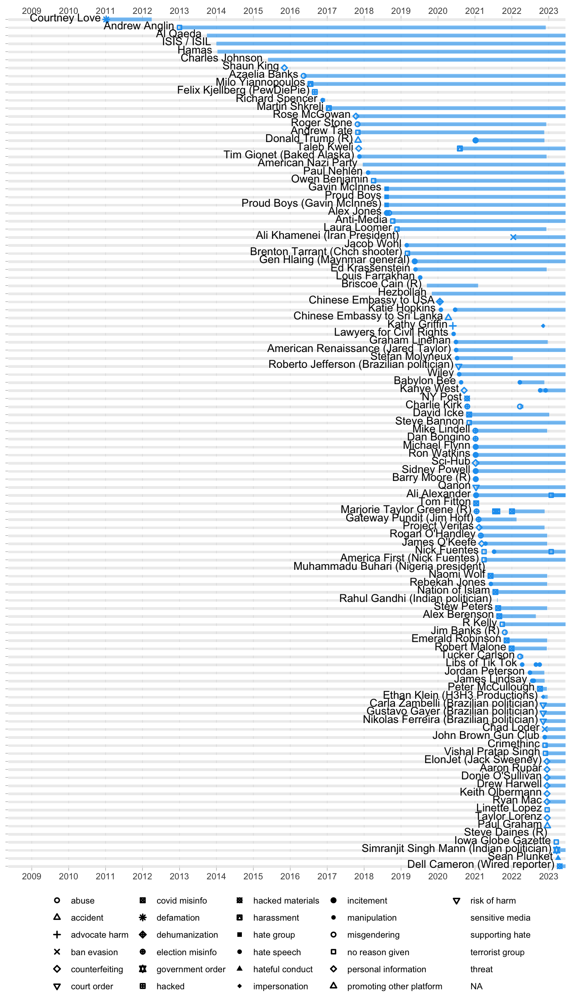
The following chart shows just accounts that were un-suspended under Musk, i.e. people with Twitter suspension that started before Oct 27 2022 and ended after that date. See below for a more fine-grained dataset of accounts unsuspended under Musk.
You can see that the primary original reasons for suspension were hate speech COVID misinformation. Kanye West and Nick Fuentes were re-suspended under Musk.
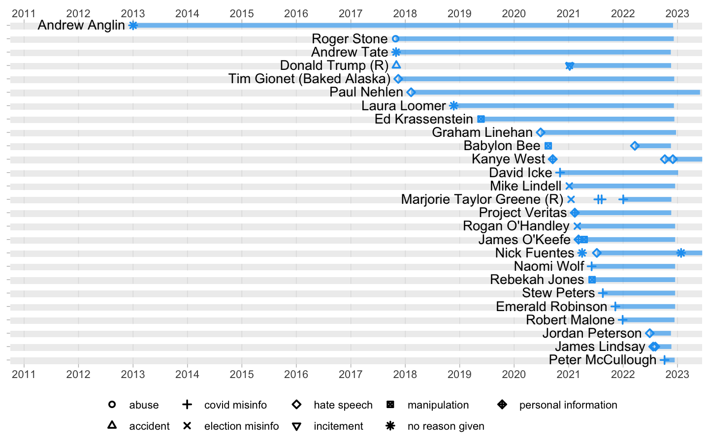
YouTube
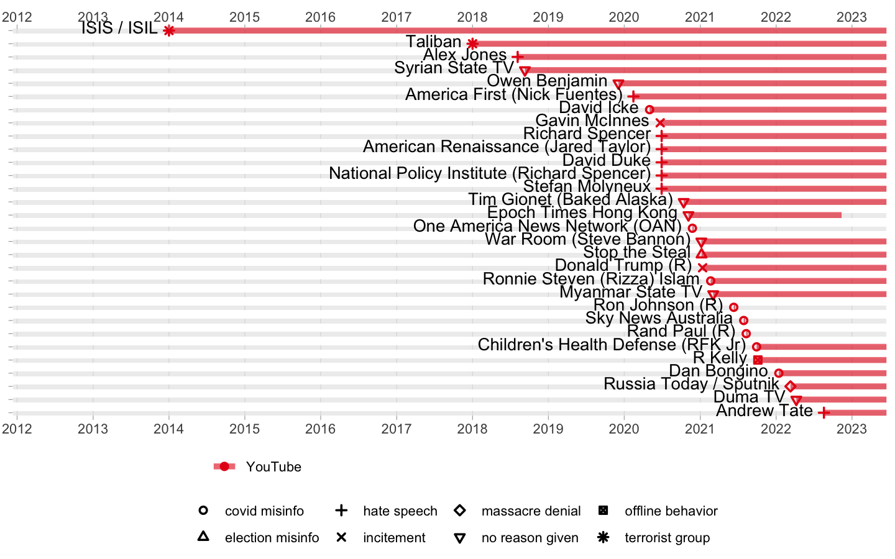
Tik Tok
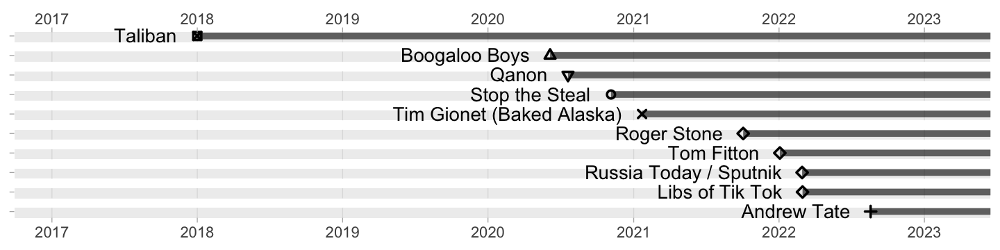
Other Platforms
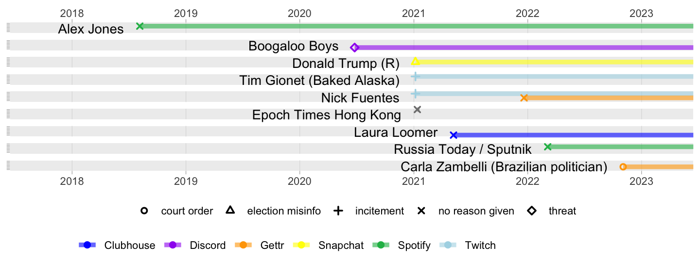
By Policy
Hate Speech
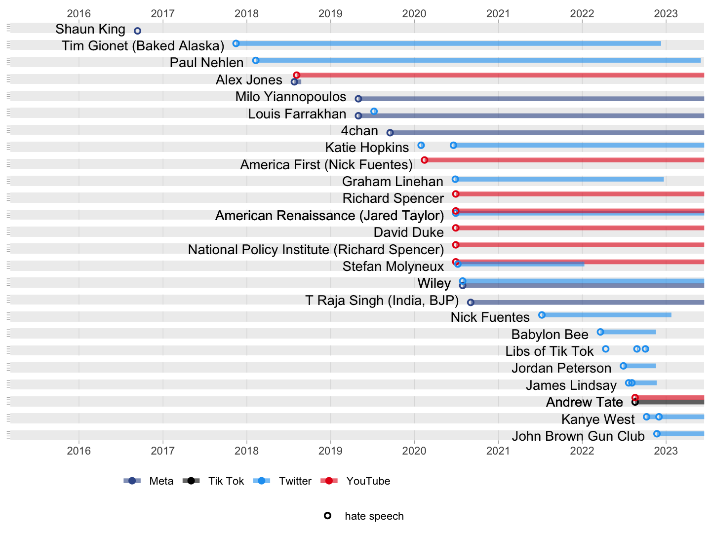
Appendix: Data Sources
In this Appendix I give a fairly lengthy discussion of what data there is available regarding suspensions on each platform, as well as data on other types of content moderation and data on the history of policy announcements by platforms.
Wikipedia page on Twitter Suspensions. Wikipedia has a list of around 400 Twitter suspensions. I chose not to create my own database (partly drawing from Wikipedia) for a few reasons: (1) I would want to add a lot of annotations to the Wikipedia data, e.g. about reasons for suspension or types of suspension. (2) Parsing the data is nontrivial: date ranges are given in various formats and would require some work on a regex to parse consistently. (3) There is some missing and inconsistent data, e.g. it has Trump’s suspension start-date but not end-date, and the names of people are not consistent (e.g. sometimes “Donald Trump”, sometimes “Donald J Trump”).
The Wikipedia dataset shows a similar basic pattern to what I document above: a dramatic increase in the rate of suspensions around mid-2017
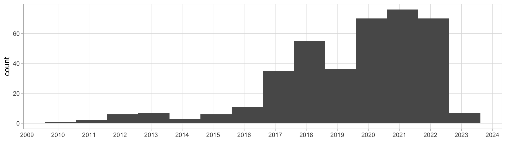
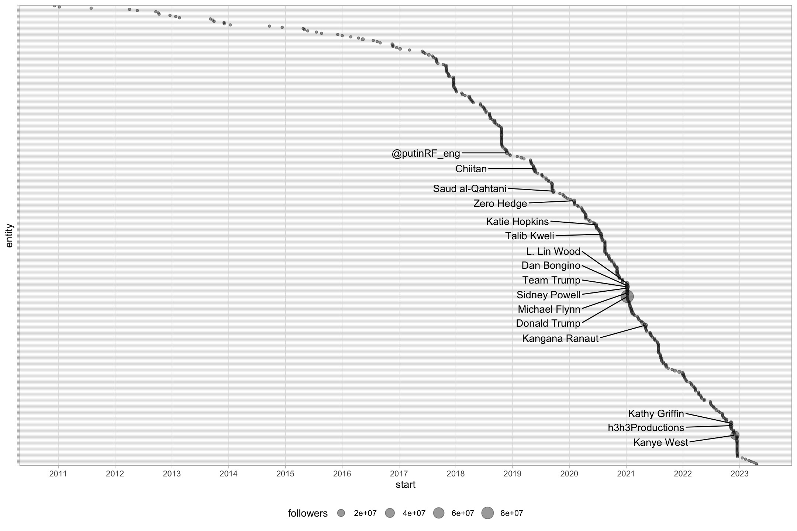
Travis Brown: Twitter Watch This project appears to have data on almost all suspensions on Twitter since Feb 2022, and also tracks whether the suspension have been reversed. It does not include any suspensions which started prior to Feb 2022. There is a giant CSV file with 600K rows, suspensions.csv. Some visualizations:
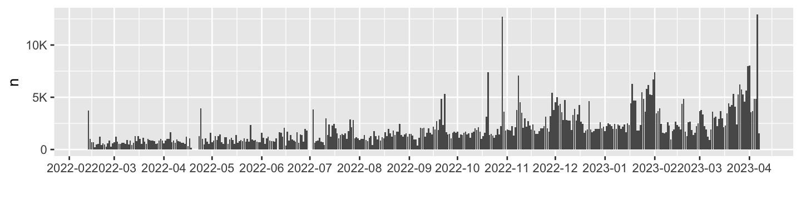
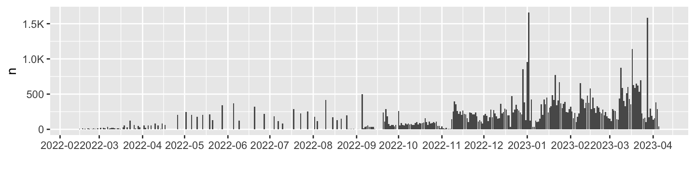
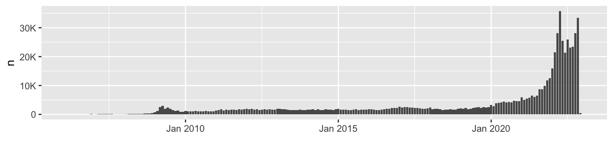

Travis Brown: Twitter Unsuspensions. This is a collection of users who Twitter has un-suspended since Oct 27 2022 (when Musk took over). For some accounts there is a date of suspension but some have missing dates, I think suspension-date is only observed if after Feb 2022. (The content of this dataset is neither a subset nor a superset of the previous daatset). Unfortunately the dataset doesn’t have follower-count or twitter handle, so it’s not easy to join with other datasets or find the most prominent accounts.
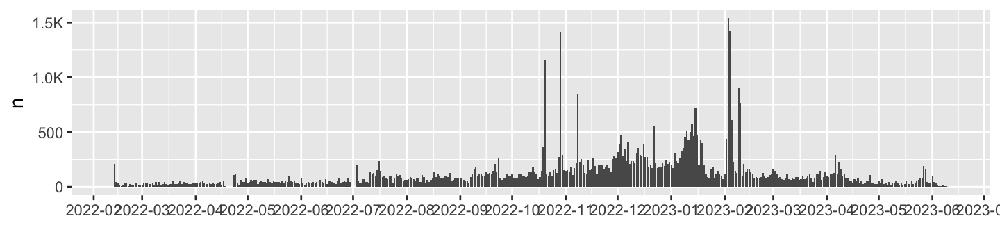
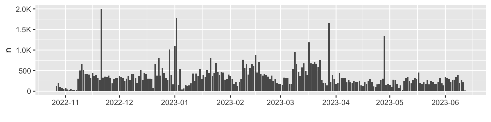
Travis Brown: Deleted Tweets / Suspended Accounts. This project scrapes profiles from the Wayback Machine, and seems to have a large set of accounts that were suspended with fairly long retention, I have not yet investigated further.
Twitter Transparency Reports. This has data on the aggregate number of suspensions per half between July 2018 and Dec 2021. Note that the website is down but the CSV files can still be downloaded.
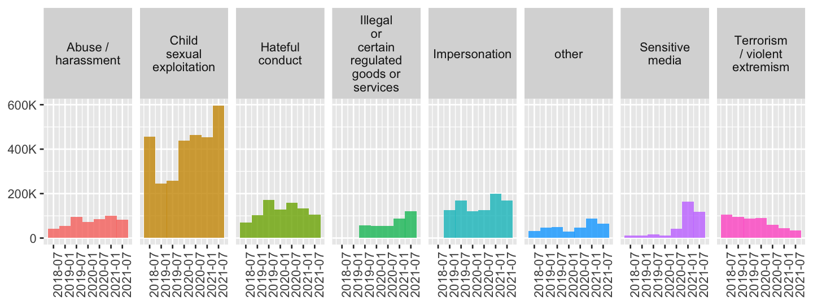
CounterHate list of unsuspensions. The organization CounterHate has a list of 10 large accounts reinstated by Twitter since Musk’s takeover. Note I believe they incorrectly listed Rizza Islam as an account re-activated by Twitter: I can find no evidence that the acccount @RizzaIslam was ever suspended, it seems to have been continuously tweeting from November 2022 through Feb 2023. I have added all 10 accounts to my database, and checked activity across all platforms.
YouTube
Wikipedia page on YouTube suspensions. See above for reasons why I chose not to use this dataset as the primary source.
Wikitubia: Terminated YouTubers. A list of around 2300 YouTubers that have been permanently banned, including date of ban, subscribers, reason for ban, and citation. They don’t have a date when unbanned.
Meta / Facebook / Instagram
There is no Wikipedia page of suspensions on Facebook, Instagram or WhatsApp.
Meta’s “Community Standards Enforcement Report” is shown below. Meta’s data does not include any data on account suspensions, however there are a few other patterns of interest.
Content actioned is relatively stable. There are fairly few notable upward or downward trends across the different types of content actioned: terrorism content actioned has increased significantly on both platforms, hate speech actions increased up to the end of 2020, then declined.
The proactive detection rate is close to 100% for most categories. there were dramatic improvements for bullying and for hate speech over 2017-2021. Note that the proactive detection rate is the share of actioned content that is automatically detected, the share of true positives that are automatically detected is surely much lower.
The prevalence of volations has fallen significantly. The log axis diminishes the magnitude of the decline: prevalence has fallen by a factor of 2-5 for nudity, bullying, hate speech, and graphic content. (I only show the prevalence upper bound, but the lower bound generally tracks the same course).
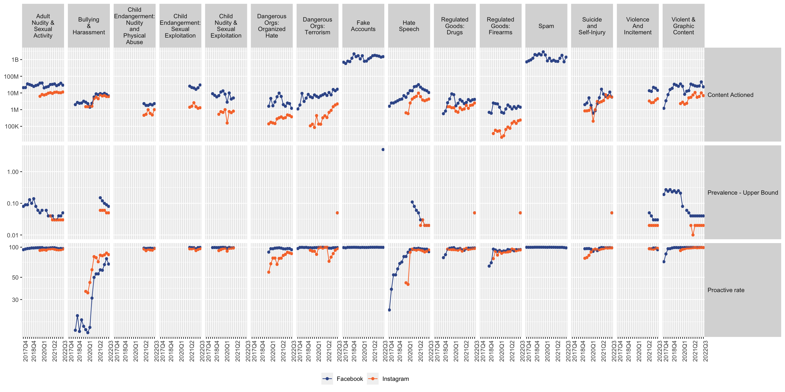
Facebook’s dangerous organizations list. This list was leaked in 2021 by the Intercept. Unfortunately it does not include the dates of when each organization was added. The list is organized into the following categories:
- Terror Organizations (e.g. Islamic State)
- Crime Organizations (e.g. Bloods, Crips)
- Hate Organizations (e.g. Aryan Nation, includes bands and websites)
- Militarized Social Movements (e.g. United States Patrio Defense Force)
- Violent Non-State Actors (e.g. Free Syrian Army)
- Hate (e.g. David Duke)
- Individuals: Crime (e.g. Denton Suggs, Gangster Disciples)
- Individuals: Terror (e.g. Osama bin Laden)
TikTok
Community Standards Report. Shows an increase in suspensions from around 1M accounts/quarter per 2020 to 6M accounts/quarter in 2023.
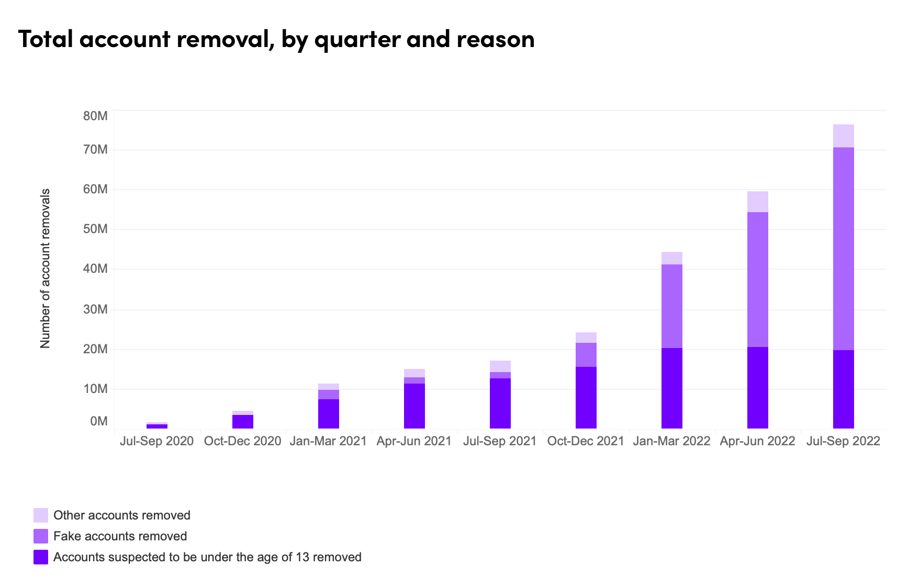
Twitch
StreamerBans. They seem to have a pretty comprehensive database of bans on Twitch.
Other Platforms
Spotify. The only unambiguous suspension from Spotify I found was Alex Jones’ podcast. Spotify removed some episodes of Joe Rogan’s podcast, and removed R Kelly and XXXtentacion’s music from playlists. They remove some white-supremacist artists and music. They removed all music from the band LostProphets after their lead singer was convicted of child sexual abuse.
Substack. I’m not aware of anybody who’s been kicked off Substack, they present themselves as very pro-free-speech.
Reddit. I’m not aware of any data on reddit account suspensions.
Rumble. The Rumble video-hosting platform has become quite large (they claim 70M MAU, and have a market cap of ). Their terms of service restrict content that is “abusive, inciting violence, harassing, harmful, hateful, anti-semitic, racist or threatening.” However I have not yet found a single example of a prominent user who has been suspended from Rumble.
Other Data Sources
Can find more suspensions by searching Wikipedia for “suspended from XXX”. E.g. site:wikipedia.org "suspended from facebook". Possibly worth doing the same search for Google News.
SocialBlade has data on number of followers by month since 2018, across Twitter, FB, YouTube. I’m not sure how easy it would be to scrape this data. They have a paid API, they say “up to 3 years of Historical statistics on creators.” However the website seems to have data back to at least April 2018.
Ballotpedia list of elected officials suspended from social media. It is an excellent resource, appears comprehensive and cites original reporting. I have added all of their data to the database as of January 2023.
Global Internet Forum to Counter Terrorism (GIFCT). They mainly work on sharing hashes of terrorist content between platforms. They have some dicussion papers about “terror designation lists” but I don’t think they maintain any lists themselves.
Specially Designated National / Global Terrorist (SDN/SDGT). This is a public list maintained by the US government, and consumed by a number of tech companies. The full history is available, but it would be extremely difficult to parse.
Lumen. This has an international database of government takedown requests. They also seem to include whether the request was honored.
CCDH Disinformation Dozen. This is a list from March 2021 of prominent accounts who were spreading anti-vax information on social media: original report, followup report from April 2021). They also have a “toxic ten” report. It’s probably worth adding both lists to the database.
Appendix: Codebook
What suspensions to include. I aim to include any suspension which merits a national news story. In the future it would be nice to also include any suspensions of accounts with more than a certain number of followers.
Definition of a suspension. It is a suspension if any of the following are true:
- Your existing content is available but you cannot post new content.
- Users cannot see your existing content anywhere on the site.
- Users cannot post links to your domain (e.g. cannot link to
piratebay.se). - Users cannot search for your hashtag (this applies to social movements, e.g.
#StopTheSteal). - Your content is blocked in the region where the majority of your followers are.
On Twitter users often can end their suspension by deleting a specific tweet, I count these as suspensions. The following do not count as suspensions:
- Your content is demonetized but still visible.
- Your content is removed from some surfaces but still available on your profile.
- Your content is blocked in a region where a minority of your followers are.
- Your content is blocked only for a secondary type of sharing (e.g. when Instagram disabled Madonna’s ability to stream to Instagram Live, but not to post regular photos; e.g. in 2010 50 cent was suspended from Twitpic but not Twitter).
Coding of platform. I categorize a suspension from either FB or Instagram as a suspension from “Meta”. There are some cases where a person has been suspended from one but not the other, in those cases I leave an annotation in the spreadsheet.
Coding of reason for suspension. Most platforms do not give public statements on the reason for a suspension, however it appears that they commonly give information to journalists which is then reflected in news stories. When there is some quotation I include it in the “long reason.” The reasons are as stated by platform, I am obviously not endorsing their judgments of whether they are making correct determinations of whether the policy applies, or if the stated reason is the true reason. I have tried to compress the “short” reasons into a small number of distinct reasons using my judgment. In some cases there is no company statement but the reason is obvious (e.g. I coded Kanye West’s “I’m going death con 3 on jewish people” statement as “hate speech”).
We record suspensions of entities not accounts. I try to record the suspension of the person or group rather than the account. E.g. Courtney Love’s original Twitter account (@CourtneyLoveUK) was suspended in 2011 and is still suspended, but Courtney Love seems to have been using another account since at least April 2012, without any suspensions for ban-evasion, and so I count the end-date as April 2012.
Appendix: History of Policy Changes
Here we collect platform statements of policy changes. I try to restrict to explicit statements of changes regarding what is banned or not. For each statement I give a summary, if a single statement contains multiple significant changes I list it multiple times. The list is very incomplete, I would guess it currently contains only around 1/2 of the relevant policy changes from the large platforms. Additionally there are probably many significant policy changes that are never explicitly announced.
- Meta.
- 2013-05-01: ban graphic violence (beheading)
- 2013-10-23: ban graphic violence (beheading) (again): “Facebook had introduced a temporary ban on such videos in May but later decided to remove the block on the grounds that the site is used to share information about world events.” Then ban was reintroduced after outcry.
- 2014-06-13: exemption for nipples if breastfeeding
- 2015-12-01: exemption for newsworthy (not announced, applied to Trump video)
- 2016-09-01: exemption for nudity if historically important (“terror of war”/napalm girl)
- 2016-10-21: exemption for newsworthy (publicly announced)
- 2019-03-27: ban on white separatism “praise, support and representation of white nationalism and white separatism”
- 2019-09-24: exemption for speech from politicians, “we will treat speech from politicians as newsworthy content that should, as a general rule, be seen and heard.”
- 2019-12-19: ban on “denying existence” of someone’s gender identity. The statement of the policy is not super clear but I believe this bans general statements of the form “trans women are men,” but it does not ban individual misgendering or deadnaming.
- 2020-06-04: revoke exemption on speech from politicians (discretionary) “we will not treat content posted by politicians any differently from content posted by anyone else”
- 2020-08-27: ban on support for hate events, mass murders or attempted mass murders, serial murders. Replaces ban on support for “mass shooting”. This was two days after the Rittenhouse shooting on August 25.
- 2020-10-12: ban on holocaust denial: “prohibit any content that denies or distorts the Holocaust.”
- 2020-10-26: temporary ban on political ads in US
- 2020-12-03: ban on covid-19 vaccine misinfo “claims about these vaccines that have been debunked by public health experts”
- 2021-02-08: ban on covid-19 misinfo “COVID-19 is man-made or manufactured”
- 2021-02-08: ban on vaccine misinfo “claims such as: Vaccines are not effective at preventing the disease … It’s safer to get the disease than to get the vaccine … Vaccines are toxic, dangerous or cause autism.”
- 2021-05-26: lift ban on covid-19 man-made claim “we will no longer remove the claim that COVID-19 is man-made or manufactured”
- 2021-06-23: three tiers of dangerous organizations
- YouTube
- 2019-06-05: ban on group superiority, holocaust denial, & massacre denial: “prohibiting videos alleging that a group is superior in order to justify discrimination, segregation or exclusion based on qualities like age, gender, race, caste, religion, sexual orientation or veteran status. … we will remove content denying that well-documented violent events, like the Holocaust or the shooting at Sandy Hook Elementary, took place.”
- 2019-09-26: exemption for newsworthy “exemption for content with”educational, documentary/news, scientific or artistic value”
- 2020-09-25: temporary ban on political ads after election
- 2020-10-15: ban on conspiracy theories - Qanon and pizzagate“prohibit content that targets an individual or group with conspiracy theories that have been used to justify real-world violence.”
- 2021-01-07: ban on false election claims – accounts will get a strike if they make false election claim.
- 2021-09-19: ban on vaccine misinformation “content that falsely alleges that approved vaccines are dangerous and cause chronic health effects, claims that vaccines do not reduce transmission or contraction of disease, or contains misinformation on the substances contained in vaccines”
- Twitter:
- 2009-01-18: first rules – bans impersonation, private information, threats of violence, copyright infringement, spam, pornography in profile picture.
- 2013-08-07: ban on targeted abuse: “Unlike Facebook, Twitter doesn’t ban bullying … targeted abuse and real threats of violence are verboten, but the page is kind of buried. So on Saturday, Twitter amended its rules, adding language on targeted abuse and harassment more prominently.”. Vice article says this was in response to abuse of UK women over the new pound notes.
- 2015-01-01: ban on “excessively violent media”
- 2015-04-01: ban on “threatening or promoting terrorism”
- 2015-04-01: ban on “promot[ing] violence against others… on the basis of race, ethnicity, national origin, religion, sexual orientation, gender, gender identity, age, or disability.”. “Twitter spokesperson …[said] the company does not prohibit hate speech.”‘Hateful conduct’ differs from ‘hate speech’ in that the latter focuses on words. It’s the incitement to violence that we’re prohibiting. Offensive content and controversial viewpoints are still permitted on Twitter.”
- 2015-08-02: ban on indirect threats of violence. Vice says “the original rules set out in 2009, which had explicitly limited the prohibition on threats to”direct” and “specific” threats.” They say “[prohibited] .. also the”incitement” of harassment – speech that wasn’t a threat per se, but was intended to result in threats regardless.”
- 2015-03-12: ban on revenge porn.
- 2017-09-01: newsworthiness exemption
- 2019-10-30: ban on political ads
- 2020-10-14: ban on holocaust denial
- 2022-11-29: ban sharing links to other platforms (lasted 1 day)
- 2022-12-14: ban sharing live location
- 2022-12-16: general reinstatement of suspended accounts “We did not reinstate accounts that engaged in illegal activity, threats of harm or violence, large-scale spam and platform manipulation, or when there was no recent appeal to have the account reinstated.”
- 2023-01-04: lifts ban on political ads
- 2023-02-28: ban on wishes of harm “ban on violent threats, wishes of harm, glorification of violence, and incitement of violence”
- 2023-04-08: lifts ban on misgendering/deadnaming removed “targeted misgendering or deadnaming of transgender individuals.”.
- Tik Tok.
- 2019-10-02: ban on political ads
- 2020-01-08: ban on promoting discrimination, “promoting or justifying exclusion, segregation, or discrimination”
- 2020-01-08: ban on showing guns, “the depiction, trade, or promotion of firearms,” with some exceptions.
- 2020-01-08: ban on dangerous individuals and organizations
- 2020-01-08: ban on harmful misinformation “misinformation that could cause harm to an individual’s health or wider public safety.”
- 2020-10-20: ban on white nationalism, anti-semitic ideas, conversion therapy “white nationalism, white genocide theory, as well as statements that have their origin in these ideologies, and movements such as Identitarianism and male supremacy … misinformation about notable Jewish individuals and families who are used as proxies to spread antisemitism. We’re also removing content that is hurtful to the LGBTQ+ community by removing hateful ideas, including content that promotes conversion therapy and the idea that no one is born LGBTQ+.”
- 2022-02-09: ban on misgendering and deadnaming
- 2022-09-21: ban on fundraising by politicians
- Reddit.
- 2015-07-16: 2015-07, new Reddit policy
- 2015-02-24: ban on non-consensual nudity
- 2015-08-05: new policy: removed “/r/CoonTown, /r/WatchNiggersDie, /r/bestofcoontown, /r/koontown, /r/CoonTownMods, /r/CoonTownMeta”.
- 2020-06-20: updated hate speech policy. “communities and users that promote hate based on identity or vulnerability will be banned.” They don’t explicitly mention holocaust denial in the post, but reporting indicates that they’re interpreting this to mean that holocaust denial is banned.
- 4chan.
- 2013-09-19: ban on doxxing
- 2014-09-03: ban on DMCA/copyrighted content
Third-Party Sources on Platform Policies
There are a variety of third-party resources comparing policies across platforms, however none seem to have data comparable to the list above, i.e. a summary of specific content policy changes over time.
Comparisons at a single point in time.
DNC (2020) Comparison of Misinformation Policies, 2020
Consumer Reports (Aug 13 2020) Comparison of Misinformation Policies, 2020. Data as of 2020, with three levels: “allowed”, “sometimes”, and “prohibited”.
UNC CITAP (May 22 2020) Comparison of Misinformation Policies, 2020. Has tables comparing misinfo policies as of 2020, three levels: “prohibited”, “flagged”, “allowed.”
Election Integrity Partnership (Oct 28 2020) Comparison of Election Policies, 2020.
Carnegie Endowment (April 1 2021) Existence of Policies, 2021. Table just marks whether a platform has a policy on some type of content, not nature of policy. They also they have a database of platform policies but it seems to only have data from February 2021.
Virality Project Comparison of COVID Vaccine Policies in 2021.
Policies tracked over time.
Mchangama, Fanlo and Alkiviadou (2023) Scope Creep: An Assessment of 8 Social Media Platforms’ Hate Speech Policies. They document the hate speech policies over time for 8 platforms using a consistent rubric. They document that hate speech policies have become more broad-reaching over time. The data is available in Excel sheets here.
Katie Harbath and Collier Fernenkes (August 2022) Election Policy Announcements, 2003-2022. Google spreadsheet with links to around 600 policy announcements, organized by platform, author, date, product-type, and country. Focussed on election-related policies, and they don’t include summaries of the policy announcement. They also wrote up analyses: (1) “A Brief History of Tech and Elections”; (2) 2022 election announcements.
Ranking Digital Rights Index, Comparison of Privacy and Transparency Policies, 2017-2022. They collect perhaps 100 different indicators across around 15 tech companies, mostly related to privacy and transparency, earliest data from 2017. All the data is available.
CELE, Letra Chica. Tracks all public policy changes on Meta, YouTube, and Twitter. Most data from May 2020, but they go back to 2019 for Facebook by using FB’s Transparency Center. Each policy update includes a short summary of what’s changed. Tracks both Spanish and English versions. Data stored on coda.io, I think it’s queryable.
Linterna Verdes, Circuito. Has about 15 in-depth case studies of platform moderation decisions.
Humboldt Institute, Platform Governance Archive. Comprehensive archive of ToS, Privacy Policy, and Community Guidlines, from 2004 until late 2021, for FB, IG, Twitter, and YouTube. The data will not be updated.
Open Terms Archive. Started by the French Ambassador for Digital Affairs, but now a collaboration. Tracks terms for many different online services in a github repo. The Platform Governance Archive has moved to be part of this project, here.
EFF, TOSback. Database of historical ToS documents from different services, with cross-platform comparisons. The most recent updates seem to be from May 2021, possibly was succeeded by Open Terms Archive.
European Commission, Copyright Content Moderation and Removal. This PDF report includes a lot of work which maps the copyright policies of major platforms.
Narrative histories:
- Catherine Buni and Soraya Chemaly (2016, the Verge) History of Moderation.
- Sarah Jeong (2016, Vice) The History of Twitter’s Rules
- Bergen (2022) Like, Comment, Subscribe. A book on the history of YouTube, it has a lot of detail on policy changes.
Appendix: Exclusion of Prominent People from Mass Media
This is a very crude history of people who’ve been “excluded” from mass media in the US.
Definition of exclusion: any impediment to work in entertainment due to your behaviour, independent of the quality of your work, either through explicit blacklisting or general sentiment. I have not taken the time to include references. In some cases there are conflicting claims about whether there was an exclusion, I generally take the person’s own judgment at face value.
More important than exclusions of individuals were exclusions of entire classes. For much of the 20th century african americans, asians, women, & openly gay people, had a pronounced difficulty getting roles in entertainment. This would be useful to document quantitatively but I think it would be more work.3
3 There’s a nice visualization here showing the history of oscar nominations: between 1927 and 1948 there were approximately 400 nominations for best actor or director, the only black nominee was Hattie McDaniel in 1939 for best supporting actress in Gone with the Wind.
There are three basic reasons for exclusion: politics, art, or personal life.
Exclusion of people for their politics. By far the biggest exclusion was the anti-communist blacklisting of the 1940s and 1950s. Many of the most prominent people in Hollywood were out of work for a decade or more, often based on fairly weak evidence of communist associations.
During wars celebrities have sometimes been excluded for being disloyal: during the Vietnam war (Jane Fonda, John Lennon, Eartha Kitt), and during the Iraq War (Sean Penn, Dixie Chicks).
In the last 20 years a number of people have been excluded for anti-homosexual statements (Isaiah Washington, Kirk Cameron) or generally conservative statements (Gina Carano, James Woods, Stacy Dash).
Exclusion of people for their art. These seem relatively rare. During the 1970s-1990s a few musicians were excluded for shocking or transgressive art, e.g. the Sex Pistols, Marilyn Manson, Body Count. Kathy Griffin has had a couple of episodes of exclusion for different statements intended to shock. In the 1980s and 1990s a number of radio hosts said shocking things and were fined or fired (e.g. Howard Stern).
Exclusion of people for their personal life: Exclusions prior to the mid-2000s were mostly for more severe accusations (Roman Polanski, Woody Allen, OJ Simpson, Mel Gibson), and the exclusions were sometimes relatively mild. In the last 20 years these exclusions have become much more common, especially for sex-related accusations against men.
Exclusion for other reasons. (1) some have been boycotted by their peers for informing on fellow artists (Eliza Kazan, Lovin Spoonful); (2) the police have temporarily boycotted a number of musicians for songs criticizing the police (NWA, Bruce Springsteen, Beyonce).
Exclusions in Film and Television
| alleged crime | result | ||
|---|---|---|---|
| 1920s | Fatty Arbuckle | rumors of immorality | film industry blacklisted |
| 1940s | Orson Welles | communist associations | blacklisted, moved to Switzerland |
| Dalton Trumbo | communist associations | blacklisted | |
| (around 100 people) | communist associations | blacklisted for a decade | |
| 1950s | Charlie Chaplin | communist associations | banned from US |
| Elia Kazan | testifying before HUAC | lost some relationships in Hollywood | |
| 1960s | Jane Fonda | opposition to Vietnam war | blacklisted |
| 1970s | Roman Polanski | rape of 13yo girl | mild disapproval from Hollywood |
| 1990s | O J Simpson | murdered his wife | blacklisted |
| Woody Allen | molested 7yo daughter | ||
| 2000s | Mel Gibson | racism & anti-semitism | “blacklisted in Hollywood for almost a decade” |
| Mira Sorvino | rejecting Harvey Weinstein | blacklisted | |
| Rose McGowan | rejecting Harvey Weinstein | blacklisted | |
| Isaiah Washington | homophobic remarks | blacklisted | |
| Michael Richards | racist remarks | blacklisted | |
| Kathy Griffin | “told Jesus to suck it” | banned from talk shows and TV appearances | |
| Sean Penn | opposition to Iraq war | dropped from movie | |
| 2010s | Bill Cosby | sexual assault | blacklisted (& later imprisoned) |
| Harvey Weinstein | sexual assault | blacklisted (& later imprisoned) | |
| Stacy Dash | conservative advocacy | blacklisted | |
| Kirk Camerson | criticism of homosexuality | blacklisted | |
| James Woods | anti-Obama tweets | blacklisted | |
| CeeLo Green | sexual assault | blacklisted | |
| Louis CK | sexual harassment | blacklisted | |
| Kathy Griffin | photo with head of Trump | fired by CNN, lost endorsement, cancelled tour | |
| T J Miller | substance abuse, sexual assault | blacklisted | |
| Gina Carano | political social media posts | fired from TV show | |
| Kevin Spacey | sexual harassment | lost roles in films | |
| Jussie Smollett | lied about an attack | lost roles in TV shows | |
| Neil deGrasse Tyson | rape, sexual harassment | temporarily lost roles in TV shows | |
| Roseanne Barr | racist tweet | lost TV show | |
| 2020s | Will Smith | slapping someone at Oscars | film projects put on hold |
| Johnny Depp | domestic violence | lost roles in films | |
| Amber Heard | involvement in trial w Johnny Depp | lost roles in films | |
| Justin Roiland | sexual harassment & abuse | lost roles in shows | |
Exclusions in Music
| alleged crime | result | ||
|---|---|---|---|
| 1940s | Paul Robeson | communist associations | blacklist and passport revoked |
| 1950s | Leonard Bernstein | communist associations | brief blacklist |
| Lena Horne | communist associations | blacklist | |
| Pete Seeger | communist associations | blacklist | |
| 1960s | Beatles | saying they’re bigger than Jesus | consumer boycott |
| Lovin Spoonful | cooperating with FBI | music industry boycott | |
| Nina Simone | “Mississippi Goddam” | boycott in the South | |
| John Lennon | criticism of US and Vietnam war | refused entry into US | |
| Eartha Kitt | criticism of Vietnam war | blacklist through LBJ and CIA | |
| 1970s | Sex Pistols | criticizing the Queen, swearing on TV | banned by the BBC, dropped by EMI |
| 1980s | NWA | “Fuck the Police” & similar songs | radio station boycott, police boycott |
| 1990s | Bruce Springseen | song against police brutality | brief police boycott |
| Marilyn Manson | transgressive lyrics | banned from performing in some states | |
| Body Count | song “cop killer” | album withdrawn and reissued | |
| 2000s | Dixie Chicks | for opposition to Iraq war | blacklisting and consumer boycott |
| Janet Jackson | showing nipple | VH1, MTV, & Viacom radio stopped playing her music | |
| R Kelly | sexual abuse | broad blacklist | |
| Chris Brown | domestic violence | weak boycott and blacklist | |
| 2010s | Lostprophets | sexual abuse | broad blacklist |
| Michael Jackson | child molestation | some radio stations stop playing music | |
| 2020s | Beyonce | song against police brutality | brief police boycott |
| Morgan Wallen | using n-word | temporarily dropped from radio/streaming playlists | |
| Kanye West | praise of Hitler | lost sponsors |
Others.
In radio: Father Coughlin, Rush Limbaugh, Don Imus fired from CBS for calling womens’ basketball team “nappy-headed hos”, Howard Stern fired from various radio shows for comments.
In sport. Colin Kapaernick blacklisted from NFL for kneeling for the anthem. Pete Rose banned from MLB for gambling.
Nazi sympathisers/collaborators. Charles Lindbergh, Henry Ford, Charles Coughlin, PG Wodehouse, Ezra Pound.
Writers: DH Lawrence, Henry Miller, Salman Rushdie (Nicole Bonoff).
Journalists. Jeffrey Toobin (New Yorker writer masturbated on zoom call),
Appendix: Alternative Visualization
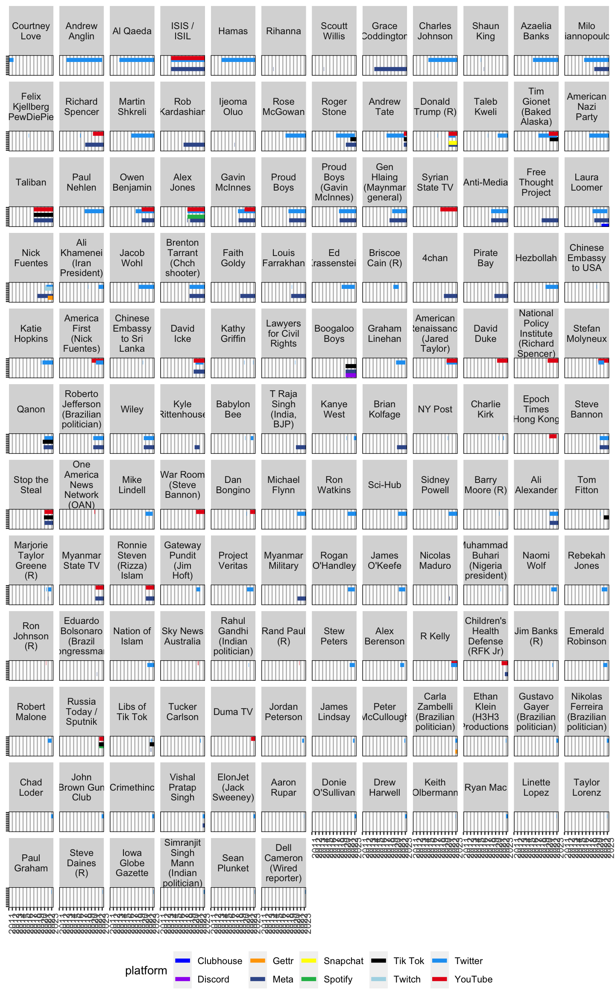
Citation
BibTeX citation:
@online{cunningham2023,
author = {Cunningham, Tom},
title = {Social {Media} {Suspensions} of {Prominent} {Accounts}},
date = {2023-01-31},
url = {tecunningham.github.io/posts/2023-01-31-social-media-suspensions-data.html},
langid = {en}
}
For attribution, please cite this work as:
Cunningham, Tom. 2023. “Social Media Suspensions of Prominent
Accounts.” January 31, 2023. tecunningham.github.io/posts/2023-01-31-social-media-suspensions-data.html.